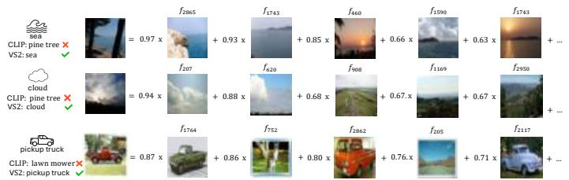

(b) ${ \mathrm { V } } { \mathrm { S } } 2 ^ { + + }$ : Selective Visual Sparse Steering F(b) ${ \mathrm { V } } { \mathrm { S } } 2 ^ { + + }$ : Selective Visual Sparse Steering Figure 1: Overview of VS2 and ${ \mathrm { V } } { \mathrm { S } } 2 ^ { + + }$ : VS2 constructs a steering vector by uniformly amplifying active sparse features, while ${ \mathrm { V } } { \mathrm { S } } 2 ^ { + + }$ selectively amplifies sparse features given external corpus.这张图概括 Beyond Interpretability 的整体方法流程。阅读时先看模块之间传递的训练信号，再看作者如何把目标拆成可优化的子问题。

(b) VS2-corrected examples using weighted interpretable features(b) VS2-corrected examples using weighted interpretable features. Figure 2: Qualitative evidence for SAE-based steering. (a) Some SAE features group coherent visual concepts. (b) In CIFAR-100 errors corrected by VS2, top active latents often align with the recovered class, illustrating coarse semantic alignment rather than perfect monosemanticity.这张图/表用于判断 Beyond Interpretability 的实验收益来自哪里。重点看替换、消融或跨模型设置下趋势是否一致，而不是只看单个最高分。
核心问题
可解释 sparse features 如果能直接 steering，就说明自监督/对比视觉表征内部有可操作的语义子空间。
方法拆解
在 frozen CLIP image encoder 的无标签激活上训练 top-k SAE，测试时放大输入 active sparse features 并解码为 steering vector；同时用 FVU 建可靠性 gate。